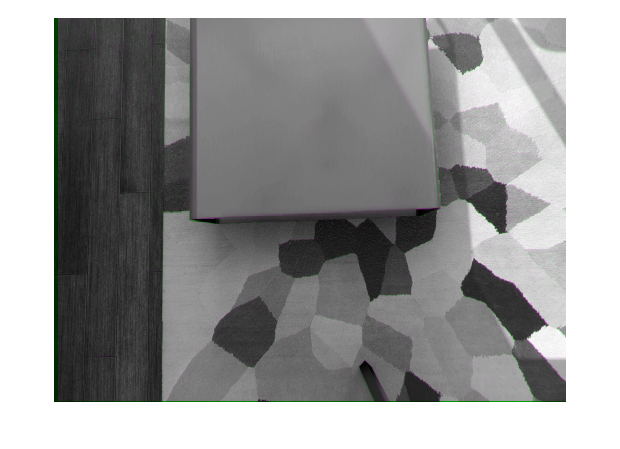
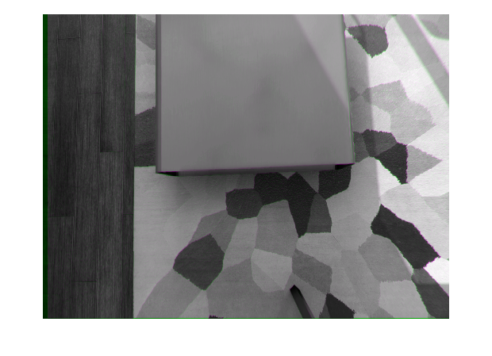
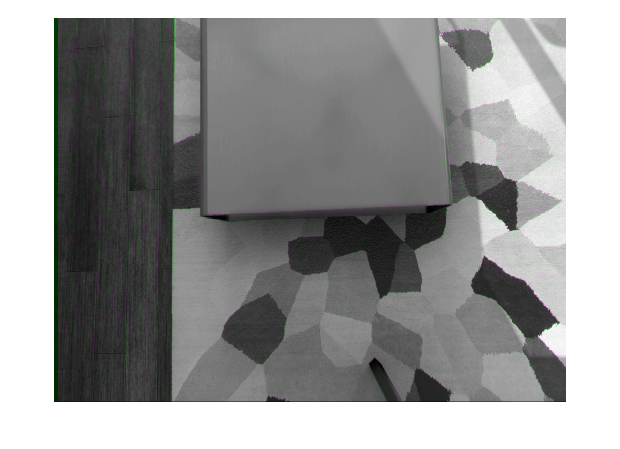
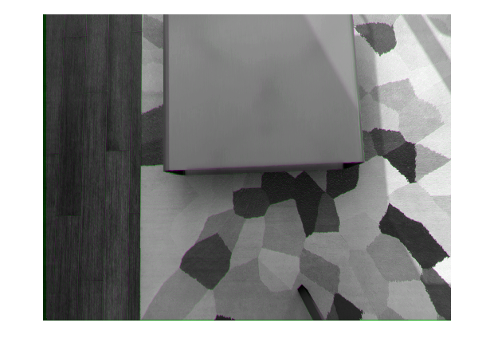
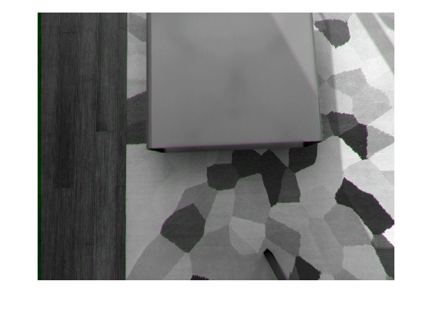
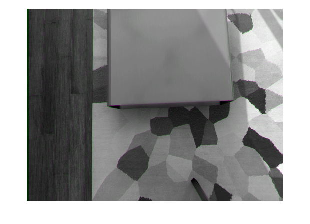
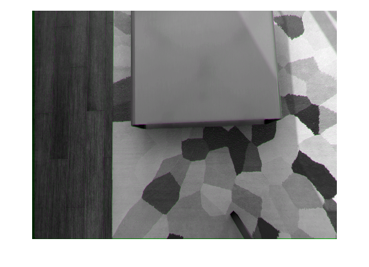
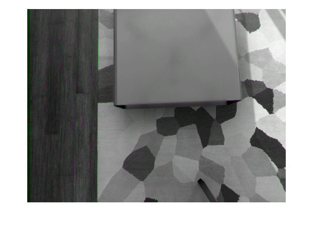
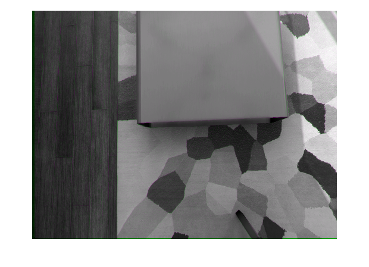

Contents
Загрузка изображений
folderPath = 'Resources/';
files = dir(fullfile(folderPath,'*.png'));
numImages = numel(files);
imageArray = cell(1, numImages);
for i = 1:numImages
imagePath = fullfile(folderPath, files(i).name);
imageArray{i} = imread(imagePath);
end
Цикл, в котором вычисляются сдвиги для пар изображений в массиве
xy_shifts = zeros(9,2);
for i = 1:(numImages-1)
xy_shifts(i,:) = (find_shift_xy(imageArray{i},imageArray{i + 1}));
end
xy_shifts
Итоговое сравнение первого(сдвинутого) и последнего изображения
imshowpair(imageArray{numImages},imtranslate(imageArray{1},sum(xy_shifts)),...
'falsecolor');

Функция, вычисляющая сдвиг для пары изображений
function shift = find_shift_xy(img1,img2)
[rows,cols] = size(img1);
f_img1 = fft2(img1);
f_img2 = fft2(img2);
corr = ifft2(f_img2.*conj(f_img1));
[max_correlation, idx] = max(corr(:));
[xpeak, ypeak] = ind2sub(size(corr), idx);
yoffSet = xpeak - rows ;
xoffSet = ypeak ;
shift = [xoffSet,yoffSet];
Вывод результатов вычисления сдвига
imshowpair(img2,imtranslate(img1,shift),'falsecolor');
        
end
xy_shifts =
8 -1
12 -2
8 -2
9 -1
10 0
9 0
9 -2
10 0
9 -3